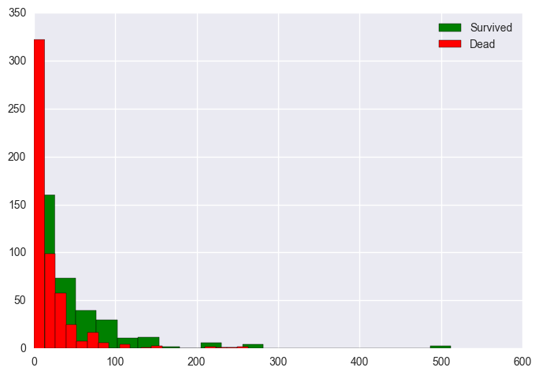

Information
This is my first Kaggle machine learning "competition". My goal is to play with classic data to improve my analytic skills and learn from what others are doing with the same data. Getting experience in the data world nowadays is simple since public data are widely available. Starting from the data from 1912 means I am a little behind compared to other data scientists. But it is still the first step.
Introduction
Titanic is the infamous disaster that everyone has heard about. The blockbuster movie in 1997 attempted to depict the event and became a huge success. But there are still many mysteries around this tragedy that were left unanswered. This project is not about trying to find new information that has been avading scientists for more than a century, but is an attempt to give me a better picture about the demographics of those whose lives were taken by the event, and those lucky ones who survived. There are two major goals of this project:
- Use statistics to explorer the features that might effect the chance of survival among the passengers.
- Use machine learning to construct models that can classify the probabilities of surviving using the important features found above.
The Data
| Variable | Definition |
|---|---|
| survival | Survival (0 = No, 1 = Yes) |
| pclass | Ticket class (1 = 1st, 2 = 2nd, 3 = 3rd) |
| sex | Sex |
| Age | Age in years |
| sibsp | Number of siblings / spouses aboard the Titanic |
| parch | Number of parents / children aboard the Titanic |
| ticket | Ticket number |
| fare | Passenger fare |
| cabin | Cabin number |
| embarked | Port of Embarkation (C = Cherbourg, Q = Queenstown, S = Southampton) |
Exploratory Data Analysis
First, we look at the scatter plots between all variables to see if there are any apparent relationship among the raw variables. The plots do not show any paraticularly strong relationship between any pair of variables. The diagonal histograms gives us the distributions of each variable of the dataset. We will look more into this.
The Age Effect
Usually when accidents like these happens, we would expect that young children and the elders are the first to be saved and have higher chance of surviving. Below are the histogram of the distribution of the passengers' ages on the ship. Figure:The distribution of age among passengers.
We can see that the majoraty of the passengers are adults from around 17 to 50 years of age. Consequently, there are more adults died in the accident than children and elders, as shown by the high density in this age group for both the survivors and non-survivors. Figure:The effect of different age on survival rates.
To explore in more details, I divided the passengers into four different age groups and calculted the survival rates for each group:
| Group | Age Range | Survival Rate | Size |
|---|---|---|---|
| Children | < 18 | 0.53982 | 113 |
| Younger Adults | 18-30 | 0.35473 | 296 |
| Older Adults | 30-50 | 0.42324 | 241 |
| Elders | > 50 | 0.34375 | 64 |
The Fare Effect
It is a common belief that passengers who paid more in fare stayed in locations that were easier to escape. The histogram and violin plot below show the distribution of fare among all passengers. The calculated median fare was \$14.45 while the mean fare was $32.20. Figure:The distribution of fare among passengers.
By comparing the survivors and non-survivors, we can see that hypothesis could be true. We can see that people who died during the accident (red) paid lower fare than those who survived (green).  Figure:The effect fare on survival rates.
Next, I separated the passengers into two groups:
- High-fare: those who paid above the 0.75 quantile of fare
- Low-fare: those who paid below the 0.75 quantile of fare
The Gender Effect
Next, we will look at the theory that female passengers are more likely to survive than male passengers. Just like most people, I had a strong belief for this theory. But let us verify it using data. Again, I plotted the histograms for male and female susvivors. It is apparent that the rate of surviving female passengers is significantly higher than that of male. A hypothesis test with p-value of $1.4061e^{-69}$ strongly suggests this.
Figure:The effect of different genders on survival rates.The Embarked Effect
The last feature we will consider is the "Port of Embarkation". According to return route of the Titanic, it was going from Southampton - to Cherbourg - to Queenstown - to New York. I suspected that order of ports of embarkation can have significant effect to the passengers' fates since it could influence the locations on the ship of the passengers. The histograms of three groups of embarkations are shown. We can immediately see that the number of passengers decreases by the order of embarkation. Southampton have the most passengers, then Cherbourg, and finally Queenstown. Figure:The effect of different ports of embarkation on survival rates.
If we look at the survival rate for each port of embakation, we can see that Cherbourg passengers have a higher chance of surviving than those who were from the other two ports. I performed a one-way F-test on all three groups. The obtained p-value of $1.5143e^{-6}$ confirms that there is a discrepancy between the three groups. Next, I performed another F-test on the first and last two ports: Southampton and Queenstown to find if the two groups have the same survival rates as their histograms imply. The resulting p-value of $0.3582$ suggests that is likely to be true. So, it could be the case that passengers who were "squeezed" in the middle of the voyage might have a better chance of surviving. I do not have a good explanation for this.
The Models
I constructed two basic models to classify whether a passenger survived using five features:
- Age
- Sex (dummified)
- Passenger Class
- Fare
- Port of Embarkation (dummified)
- Logistic Regression
(C=1.0, class_weight=None, dual=False, fit_intercept=True, intercept_scaling=1, max_iter=100, multi_class='ovr', n_jobs=1, penalty='l2', random_state=None, solver='liblinear', tol=0.0001, verbose=0, warm_start=False)
- Random Forest Classifier
(bootstrap=True, class_weight=None, criterion='gini', max_depth=None, max_features='auto', max_leaf_nodes=None, min_samples_leaf=1, min_samples_split=2, min_weight_fraction_leaf=0.0, n_estimators=10, n_jobs=1, oob_score=False, random_state=None, verbose=0, warm_start=False)
Model Performance Assessments
- Confidence Intervals
To calculate the confidence intervals for the mean of accuracy, precision and recall scores, I generated 100 random train-test splits. Next, I used the saved models above (in pickle file type) to predict the results from these test sets. Then, the 90% confidence intervals for the accuracy, precision and recall scores were calculated from these samples.
Score Logistic Regression Random Forest Classifier Accuracy (0.7662, 0.7764) (0.7547, 0.7678) Precision (0.7590, 0.7725) (0.7369, 0.7547) Recall (0.6374, 0.6597) (0.6374, 0.6558) - ROC Curves
We can also use the ROC curves to assess our models by their true positive and false positive rates.
 Figure: ROC curves for logistic and random forest models.
Figure: ROC curves for logistic and random forest models.
Comparing these two models, we can see that the random forest does a phenomenal job for this particular test set. Its ROC curve approaches the top left corner, which is the ideal situation when whe have high true positive rate and low false positive rate. The logistic model also performs well.
- PR Curve
We will also investigate the Precision-Recall curve to see how the classification works.
Figure: PR curves for logistic and random forest models.
The logistic model's curve behaves as we expect for a basic model. However, the close-to-perfect PR curve for the random forest model makes me want to reconsider whether the model is overfitting. By looking at the values for the predicted probabilities of this model, I found that these values are rounded in an abnormal way when compared to that of the logistic model. Further studies on this model is necessary to find out what the problem might be.
Conclusion
Since a majority of the passengers did not survive, high accuracy for the models is expected. Nevertheless, the classes are not too unbalanced to perform resampling techniques. Both logistic and random forest models work well under our test environment. But the random forest seems to overfit the data and needs to be reconsidered. We can also perform hyper-parameters tuning can also be used to improve the models' efficacy. Nevertheless, they can be used as the baseline models for our project.